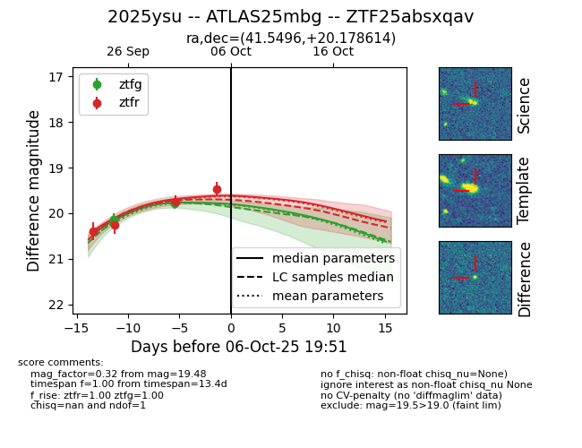
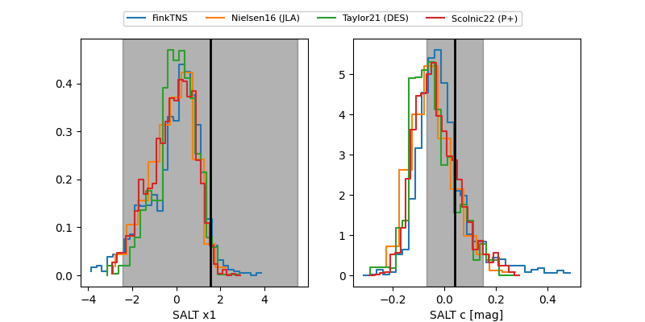

FINK: ZTF25absxqav
Lasair: ZTF25absxqav
ALeRCE: ZTF25absxqav
TNS: 2025ysu
YSE: 2025ysu
ZTF25absxqav (ztf,fink)
2025ysu (tns,yse)
ATLAS25mbg (atlas)
equatorial (ra, dec) = (41.5496,+20.17861)
galactic (l, b) = (156.3678,-35.13560)


last ztfg=19.79, ztfr=19.48
2 ztfg, 4 ztfr detections